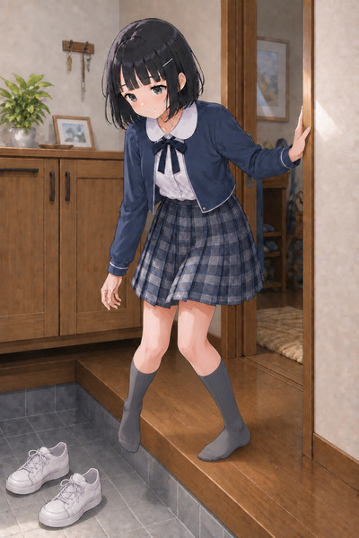
A04 上がり框を越える
採用・足元修正済み左足全体を木床へ置き、右足は土間と靴から完全に離れた状態へ修正。空の白スニーカー2足は土間に残り、足と靴の取り違えは解消。顔・目線・髪・ピン・丸襟ボレロの見た目も継続。
AKARI v3.1 / A・B・C
ユーザー選択の制服で生成。A04は靴を脱ぎ終えて上がる瞬間へ修正しました。画像を押すと原寸PNGを開きます。

左足全体を木床へ置き、右足は土間と靴から完全に離れた状態へ修正。空の白スニーカー2足は土間に残り、足と靴の取り違えは解消。顔・目線・髪・ピン・丸襟ボレロの見た目も継続。
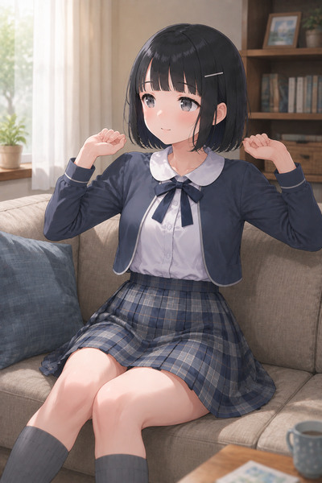
横へ視線を外して伸びを始める小さな動作。口が少し緩み、通常の笑顔から表情幅が出る。
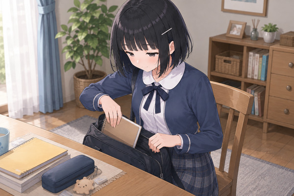
鞄からノートを出す自然な途中動作。手元を見る顔と両手の役割が明確で、生活感のある有力候補。
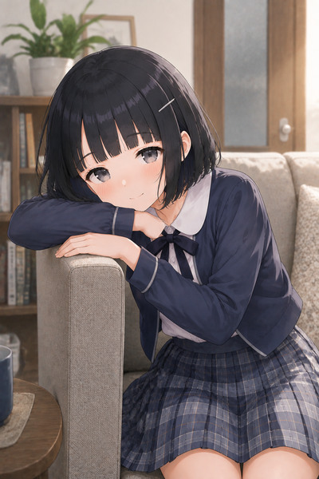
頬を腕に預け、顔を上げすぎずこちらを見る。帰宅後の安心と少し休みたい気分が一目で伝わる有力候補。
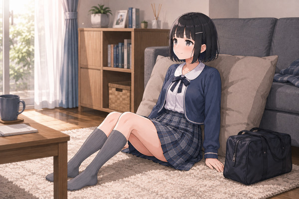
床でクッションにもたれ、窓の方を見る全身。体重の預け方と室内の灰色靴下が自然で、表情以外の脱力が伝わる。
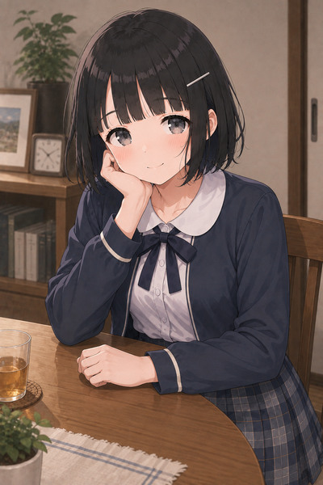
頬杖と緩い肩、近い目線で帰宅後の会話が自然。顔のディテールと制服が安定した有力候補。
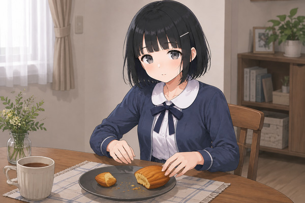
不均等なマドレーヌと止まった手、微笑みではない反応で小さなずるさが明瞭。顔と衣装も良好。
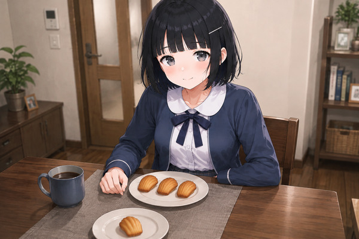
自分側3個と相手側1個の差が明瞭。すました小さな笑みとの組み合わせでちゃっかり感が伝わる。
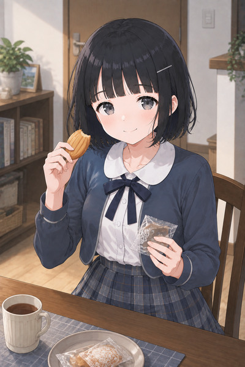
一口食べたマドレーヌとわずかに開き直る口元が噛み合う。顔・丸襟・リボン・手元が安定した有力候補。
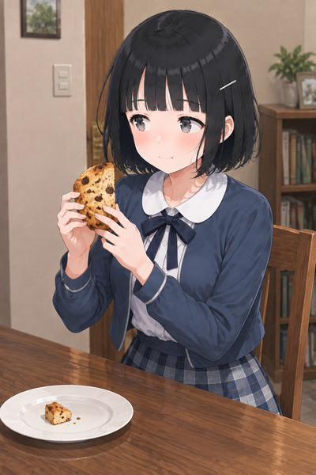
大きい菓子を手元に確保しつつ明確に視線をそらす。ごまかしが控えめで、表情幅を作る有力候補。
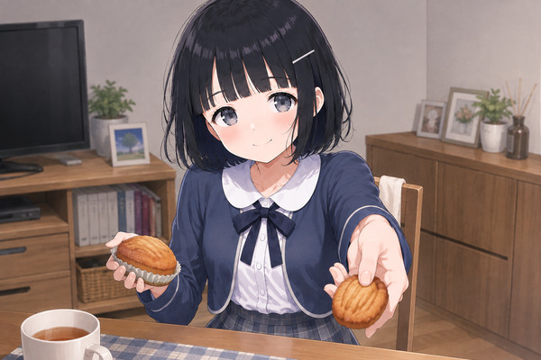
自分の菓子を保ちつつ小さい方を差し出す手で、機嫌取りとちゃっかり感が明瞭。前景の手が構図の幅を作る。
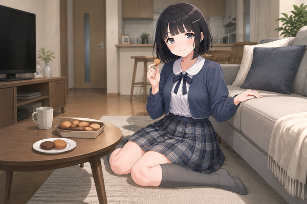
床で気楽に座ったままおやつを続ける空気が自然。小さな勝利感は穏やかで、室内全身の構図幅に役立つ。
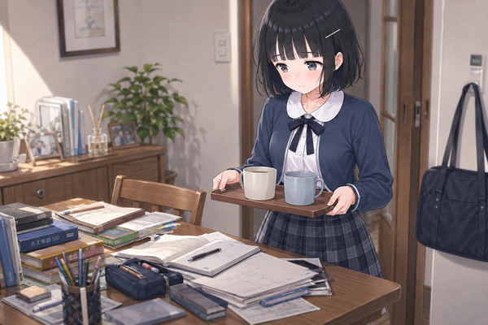
机を見下ろしてトレイを置けず止まる反応が明瞭。二つのカップと両手の支持も自然で、視線の幅がある。
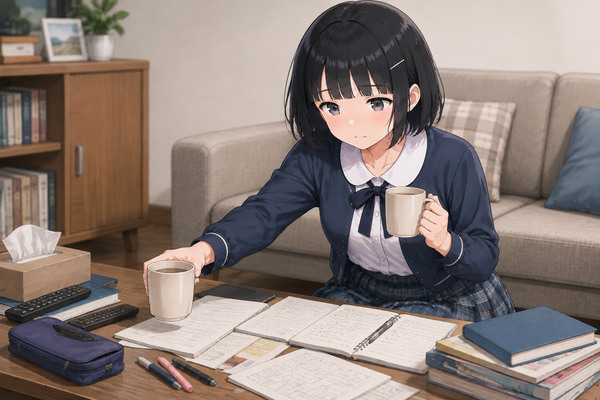
ノート上でカップを浮かせて止まる途中動作と困り顔が明瞭。机・両手・カップの位置関係が自然で有力。
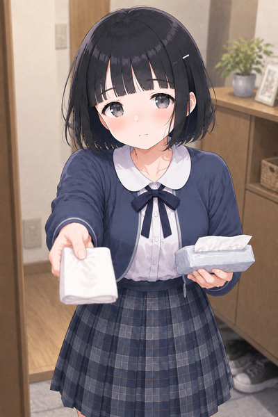
ティッシュを差し出して待つ手と少し困った顔で、受け取ってほしい距離感が明瞭。笑顔以外の近景として有力。
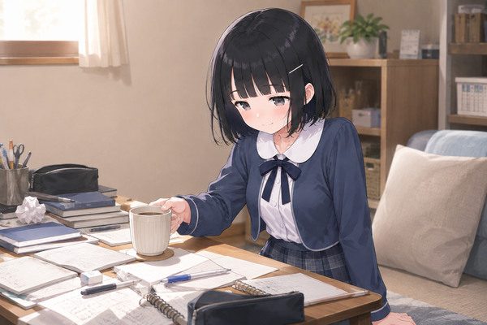
机へ視線を落とし、カップを置きながら小さく困り笑いする日常の動作。C04と対になる自然な有力候補。
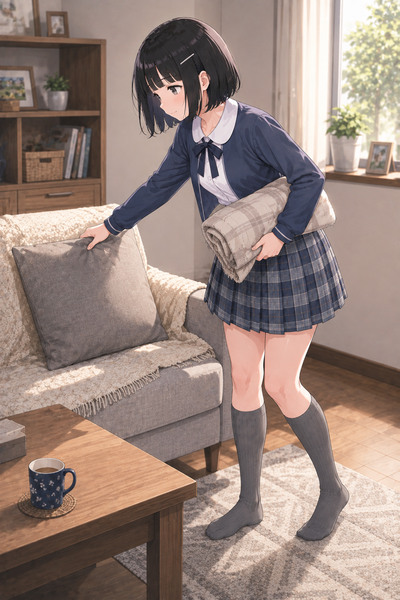
クッションを整えつつ膝掛けを抱える全身の動作が自然。横顔、ピンの左右、灰色靴下と足元が整い、家庭内実務の幅を作る。
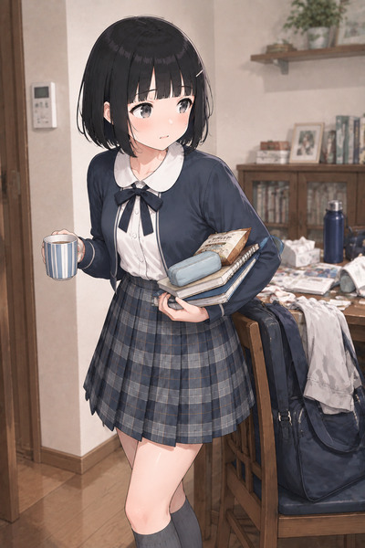
片腕の本・筆箱・菓子と反対手のマグが自然。置き場所を探す横目と少し開いた口で段取りの都合が伝わる。ピンは正しい遠側。
{kind=link}
{kind=link}
{kind=link}
{kind=link}
{kind=link}
{kind=link}
{kind=link}
{kind=link}
{kind=link}
{kind=link}
{kind=link}
{kind=link}
{kind=link}
{kind=link}
{kind=link}
{kind=link}
{kind=link}
{kind=link}